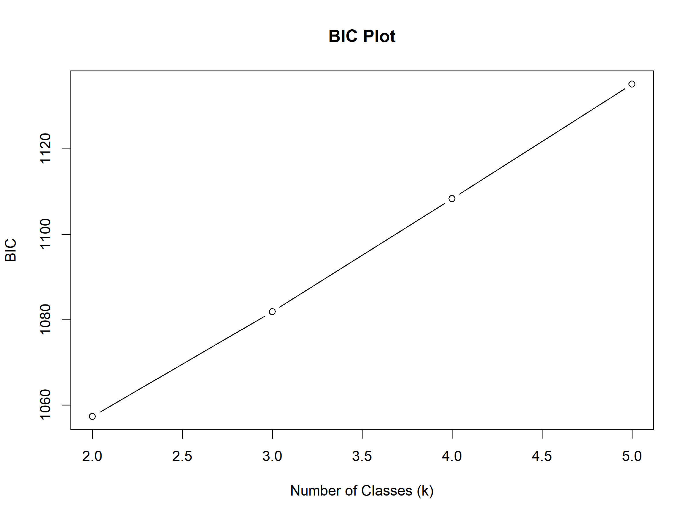

install.packages("poLCA")潜类别分析 (Latent Class Analysis) 完全指南
R包
统计模型
聚类分析
如何使用 poLCA 识别不可观测的亚群，从市场细分到医学诊断的实战分类技术。
简介
潜类别分析 (Latent Class Analysis, LCA) 是一种统计方法，用于识别观测数据中未观察到的子群体（潜类别）。它通常用于分类变量（如问卷调查中的是非题或李克特量表），旨在将具有相似响应模式的个体归为一类。
在 R 中，poLCA 是最常用的进行 LCA 分析的包。
应用场景
LCA 在多个领域都有广泛应用：
1. 医学与公共卫生
- 疾病亚型识别：根据症状组合识别不同的疾病表型（如抑郁症亚型）
- 健康行为分类：将人群按健康行为模式分类（如吸烟+饮酒+运动的组合）
- 患者分层：识别具有不同治疗反应的患者群体
2. 心理学与教育
- 学习风格分型：识别不同的学习者类型
- 人格类型研究：基于问卷回答识别人格类型
3. 市场营销
- 消费者细分：根据购买行为和偏好细分市场
- 用户画像：识别具有相似特征的用户群体
[!NOTE] LCA 与聚类分析的区别：LCA 基于概率模型（假设数据来自混合分布），而 K-means 等聚类方法基于距离度量。LCA 更适合分类变量，且能提供归类的概率估计。
安装
library(poLCA)
library(dplyr)
library(ggplot2)实例数据
我们将使用 poLCA 包自带的 values 数据集。该数据集包含了 216 名受访者对 4 个二分变量（趋向普世主义或特定主义）的回答。
data(values)
head(values) A B C D
1 2 2 2 2
2 2 2 2 2
3 2 2 2 2
4 2 2 2 2
5 2 2 2 2
6 2 2 2 2# 变量说明：
# A, B, C, D 都是二分类变量 (1, 2)模型构建
LCA 的关键步骤是确定最佳的潜类别数量 (k)。通常我们需要比较不同 k 值模型的拟合优度指标。
模型选择标准详解
| 指标 | 说明 | 选择标准 |
|---|---|---|
| BIC | 贝叶斯信息准则 | 越小越好，对模型复杂度惩罚较大 |
| AIC | 赤池信息准则 | 越小越好，比BIC倾向于选择更多类别 |
| 熵 (Entropy) | 分类准确性 | 越接近1越好，>0.8表示分类清晰 |
| BLRT | Bootstrap似然比检验 | p<0.05表示k类优于k-1类 |
| Lo-Mendell-Rubin | LRT变体 | p<0.05表示k类优于k-1类 |
[!TIP] 实践建议：首选 BIC 最小的模型，但同时考虑熵值（>0.7）和各类别样本量是否足够（通常要求每个类别 >5%）。
1. 寻找最佳类别数
我们循环运行 k=2 到 k=5 的模型，并比较其 BIC 值。BIC 越小，模型拟合越好且越简洁。
# 定义公式
f <- cbind(A, B, C, D) ~ 1
# 存储结果
results <- list()
bic_values <- c()
set.seed(123)
for (k in 2:5) {
res <- poLCA(f, values, nclass = k, verbose = FALSE, nrep = 5)
results[[k]] <- res
bic_values[k] <- res$bic
cat("k =", k, ": BIC =", res$bic, "\n")
}k = 2 : BIC = 1057.313
k = 3 : BIC = 1081.856
k = 4 : BIC = 1108.346
k = 5 : BIC = 1135.222 # 绘制 BIC 变化图
plot(2:5, bic_values[2:5], type = "b", xlab = "Number of Classes (k)", ylab = "BIC", main = "BIC Plot")
假设根据 BIC，k=2 或 k=3 是较好的选择（这里假设选择 k=2 进行演示）。
2. 拟合最终模型
# 运行 k=2 的模型
best_model <- poLCA(f, values, nclass = 2, verbose = FALSE, graphs = TRUE)
结果解读
类别概率 (Class Proportions)
查看每个潜类别在总样本中的占比。
best_model$P[1] 0.2792475 0.7207525条件概率 (Item Response Probabilities)
查看每个类别在各个观测变量上的回答概率。这是定义每个类别特征的关键。
best_model$probs$A
Pr(1) Pr(2)
class 1: 0.006807065 0.9931929
class 2: 0.286412439 0.7135876
$B
Pr(1) Pr(2)
class 1: 0.06023677 0.9397632
class 2: 0.67038136 0.3296186
$C
Pr(1) Pr(2)
class 1: 0.07347022 0.9265298
class 2: 0.64598422 0.3540158
$D
Pr(1) Pr(2)
class 1: 0.2308695 0.7691305
class 2: 0.8676281 0.1323719例如，如果在变量 A 上，Class 1 选择 “1” 的概率很高，而 Class 2 选择 “2” 的概率很高，这就是这两个类别的区分特征。
熵值计算
熵值是评估分类质量的重要指标：
# 计算熵
entropy <- function(p) sum(-p * log(p + 1e-10), na.rm = TRUE)
class_entropy <- apply(best_model$posterior, 1, entropy)
relative_entropy <- 1 - mean(class_entropy) / log(ncol(best_model$posterior))
cat("Relative Entropy:", round(relative_entropy, 3), "\n")Relative Entropy: 0.719 [!IMPORTANT] 熵值 > 0.8 表示分类非常清晰；0.6-0.8 为可接受；< 0.6 表示类别之间界限模糊，需要重新考虑模型。
可视化
除了 poLCA 自带的图，我们可以用 ggplot2 自定义条件概率图，更清晰地展示类别特征。
# 数据整理
probs_df <- data.frame()
for (var in names(best_model$probs)) {
tmp <- as.data.frame(best_model$probs[[var]])
tmp$class <- 1:nrow(tmp)
tmp$variable <- var
# 取出回答为 1 (或某个特定选项) 的概率
tmp$prob <- tmp[, 1]
probs_df <- rbind(probs_df, tmp[, c("class", "variable", "prob")])
}
# 绘图
ggplot(probs_df, aes(x = variable, y = prob, group = class, color = factor(class))) +
geom_line(size = 1) +
geom_point(size = 3) +
labs(
title = "潜类别特征图 (Profile Plot)",
y = "Probability of Response Category 1",
color = "Latent Class"
) +
theme_minimal()
分配类别
我们可以提取每个样本属于各个类别的后验概率，并进行分类。
# 后验概率
head(best_model$posterior) [,1] [,2]
[1,] 0.9589821 0.04101786
[2,] 0.9589821 0.04101786
[3,] 0.9589821 0.04101786
[4,] 0.9589821 0.04101786
[5,] 0.9589821 0.04101786
[6,] 0.9589821 0.04101786# 预测的类别
head(best_model$predclass)[1] 1 1 1 1 1 1# 将预测类别合并回原数据
values$class <- best_model$predclass
head(values) A B C D class
1 2 2 2 2 1
2 2 2 2 2 1
3 2 2 2 2 1
4 2 2 2 2 1
5 2 2 2 2 1
6 2 2 2 2 1类别命名与解读指南
识别出潜类别后，如何给它们命名是研究的关键：
命名原则
- 基于最显著特征：找出每个类别在哪些变量上有极端概率（>0.8 或 <0.2）
- 使用描述性标签：如”高风险行为组”、“健康生活方式组”
- 避免价值判断：使用中性词汇，如”类型A”而非”问题组”
报告示例
本研究识别出两个潜类别： - 类别 1 (普世主义型, n=XX, XX%)：在所有价值观问题上倾向于选择普世主义立场（概率 > 0.7） - 类别 2 (特殊主义型, n=XX, XX%)：在关系导向问题上倾向于特殊主义立场（概率 > 0.8）
常见问题与解决方案
| 问题 | 可能原因 | 解决方案 |
|---|---|---|
| 模型不收敛 | 起始值不佳 | 增加 nrep 参数（如设为10-20） |
| 某类别样本过少 | 类别数过多 | 减少 k 值或检查数据质量 |
| 熵值过低 | 类别界限不清 | 考虑减少类别数或重新选择变量 |
| 局部最优 | 单次运行陷入局部解 | 增加 nrep 并比较多次运行结果 |
参考文献
- Linzer, D. A., & Lewis, J. B. (2011). poLCA: An R Package for Polytomous Variable Latent Class Analysis. Journal of Statistical Software, 42(10), 1-29.
- Nylund, K. L., et al. (2007). Deciding on the number of classes in latent class analysis and growth mixture modeling. Structural Equation Modeling, 14(4), 535-569.